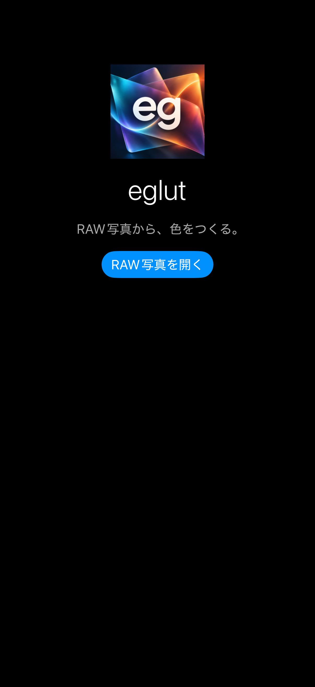
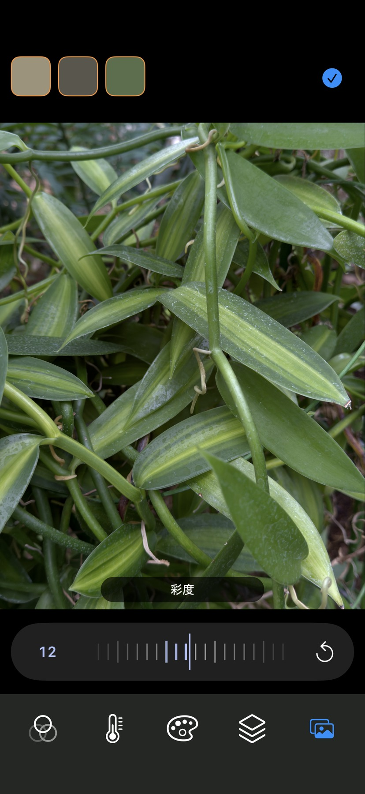
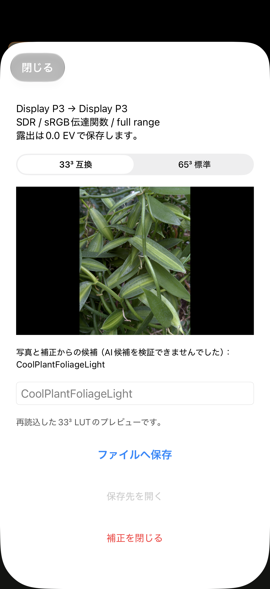

写真の仕上がりを、使い回せる「色」に。
撮影した RAW を見ながら、落ち着いた緑、暖かい光、やわらかな階調など、自分の好みを探す。その調整を別の写真や撮影でも使えるようにするのが eglut の目的です。
3D LUT は、入力された色を別の色へ変換するための表です。eglut は補正した写真を保存する代わりに、その色の変換を .cube ファイルにまとめます。写真ライブラリの原本や既存の編集は変更しません。
LUT は RAW の現像設定や編集手順を復元するファイルではありません。同じ LUT でも、写真や光、利用先の色処理によって仕上がりは変わります。
画面でたどる、色づくりの流れ


写真ライブラリから RAW を選んで、色づくりを始めます。


彩度や暖かみなどを目盛りで調整。3つの枠に好みの設定を保存できます。


格子数と名前を決め、保存する LUT のプレビューを確認して「ファイル」へ。
4枚の実機スクリーンショットは2026年10月17日提供。撮影時のビルド番号は未確認で、画面や候補名は一例です。横持ち画面はページ上部に掲載しています。
色をつくるための機能
明るさから色味まで、11の基本調整
露出、ブリリアンス、ハイライト、シャドウ、コントラスト、明るさ、ブラックポイント、彩度、自然な彩度、暖かみ、色合いを調整できます。目盛りを動かしながらプレビューを確認し、矢印やダブルタップで項目ごとに初期値へ戻せます。
5つのスタイルから、好みを探す
Neutral・Warm・Cool・Earthy・Muted を用意。トーンとカラーを正方形のグラフで同時に調整し、パレットの量でスタイル固有の色味を加減できます。基本調整と組み合わせて仕上げます。
拡大・オリジナル比較・3つのプリセット
ピンチで拡大し、ドラッグで細部を確認。写真を長押ししている間は補正前の基準画像に切り替わります。3枠の比較プリセットは別の RAW にも適用でき、アプリを開き直しても保持します。
保存する LUT を、読み直して確認
33³互換／65³標準を選択でき、初期選択は33³です。生成した LUT を再読込したプレビューが準備できてから保存します。名前は自分で入力するほか、写真と補正に基づく候補も使えます。対応環境では端末内 AI が候補を生成し、利用できない場合も規則に基づく候補を表示します。
前回の編集から、続ける
RAW の参照と補正を端末内に自動保存し、正常な保存状態があれば再起動後に復帰します。最近使った RAW は直近10件から選べます。
基本の使い方
- RAW を選ぶ。「RAW写真を開く」から写真へのアクセスを許可し、アプリ内の RAW 一覧で1枚を選びます。iCloud 上の原本は取得に通信が必要な場合があります。
- 色と階調を整える。下部のツールを選び、目盛りを動かして調整します。スタイルでは種類を選び、グラフとパレットで色をつくります。横持ちでは操作部の配置も切り替わります。
- 仕上がりを見比べる。写真の長押しでオリジナルと比較。残したい補正は空の比較枠を1回タップして保存し、保存済みの枠をダブルタップして呼び出します。
- LUT を書き出す。チェックマークを押し、33³／65³を選択。露出0.0 EVの保存プレビューを確認し、半角英数字1〜64文字で名前を決めて「ファイルへ保存」を押します。
- 対応アプリへ渡す。保存後に「保存先を開く」から .cube を選び、システムの共有メニューで対応アプリへ渡せます。利用先では Display P3 用の入力設定を確認してください。
操作の早見表
| したいこと | 操作 |
|---|---|
| 補正の値を増やす | 縦持ちの横目盛りは右から左へ動かします。横持ちの通常の縦目盛りは下へ動かすとプラスです。 |
| 項目を初期値へ戻す | 矢印をタップ、または目盛りをダブルタップ。スタイルの矢印はトーン・カラー・パレットの3値を戻します。 |
| オリジナルを見る | 写真を長押し。指を離すと補正後へ戻ります。 |
| 比較枠を使う | 空の枠を1回タップで保存。保存済み枠をダブルタップで適用、長押しして確認後に消去します。 |
| 編集を続ける | 保存画面上部の「閉じる」で編集へ戻ります。 |
| 編集を終える | 「補正を閉じる」を選び、確認して終了。現在の RAW 参照・補正・最近の履歴を消去します。比較3枠と保存済み LUT は残ります。 |
Undo／Redo はありません。同じ RAW でも、一覧や履歴から選び直すと補正0・Neutralで始まります。未書き出しの変更があるときは、切り替え前に確認が表示されます。
持ち出す色の仕様
露出の調整は LUT に含めません。編集時や比較プリセットには露出を保持しますが、書き出す LUT と保存画面の最終プレビューでは0.0 EVとして扱います。その他の色・階調の補正は反映します。
| ファイル形式 | 3D LUT（.cube）、33³互換／65³標準 |
|---|---|
| 入力 → 出力 | Display P3 → Display P3 |
| 色の条件 | SDR / sRGB 伝達関数 / full range（0〜1） |
| 含まれないもの | 写真そのもの、RAW 現像設定、向き・ズーム、ICC プロファイル、HDR ゲインマップ |
主な利用先として、P3 対応版の egcamera を想定しています。sRGB や Log 用に指定し直して使うと色が一致しません。利用先の対応形式・格子数・入力設定の確認が必要です。
egcamera への共有から実際の読み込みまでの実機確認は継続中です。すべての LUT 対応アプリとの互換性を保証するものではありません。
利用前に知っておきたいこと
- iPhone・iOS 26 以降が対象。RAW は写真ライブラリから選びます。JPEG／HEIF 単独の写真は対象外で、RAW の対応範囲は OS のデコーダーに依存します。
- 色づくりと LUT の出力に集中。補正写真の保存、RAW 撮影、動画、部分補正、HDR／Log LUT、iPad 専用 UI は現在の対象外です。
- プレビューには解像度の上限があります。写真表示は長辺3072px以下で、拡大は全解像度の細部表示を保証しません。RAW 原本を縮小保存する処理ではありません。
- 自動保存と LUT 保存は別です。補正を別アプリで使うには .cube の書き出しが必要です。自動保存の完了前の中断では、直近の操作が失われる場合があります。
写真と補正データの扱い
RAW の読取・色の調整・LUT の生成・名前候補のための解析は端末内で行います。写真、RAW、GPS、EXIF を外部 AI へ送信しません。元の写真は変更せず、RAW への参照、補正、最近の履歴、比較プリセットを端末内に保存します。
iCloud 上の原本取得、クラウドへのファイル保存、利用者が選んだ共有には外部通信が伴う場合があります。データの保存・削除の範囲は プライバシーポリシーの eglut 節をご覧ください。
開発状況・入手について
現在は開発中・非公開です。アプリ本体とソースコードは一般公開・配布していません。公開時期・価格は未定です。機能や画面は今後変更される場合があります。
掲載内容は 時点のプロトタイプ0.1.6（7）の実装・仕様に基づきます。回転ロックとの連動、大きな RAW の性能、iCloud・ファイル提供サービスごとの動作、AI 候補の品質、egcamera への受け渡しなど、実機での確認を続けています。